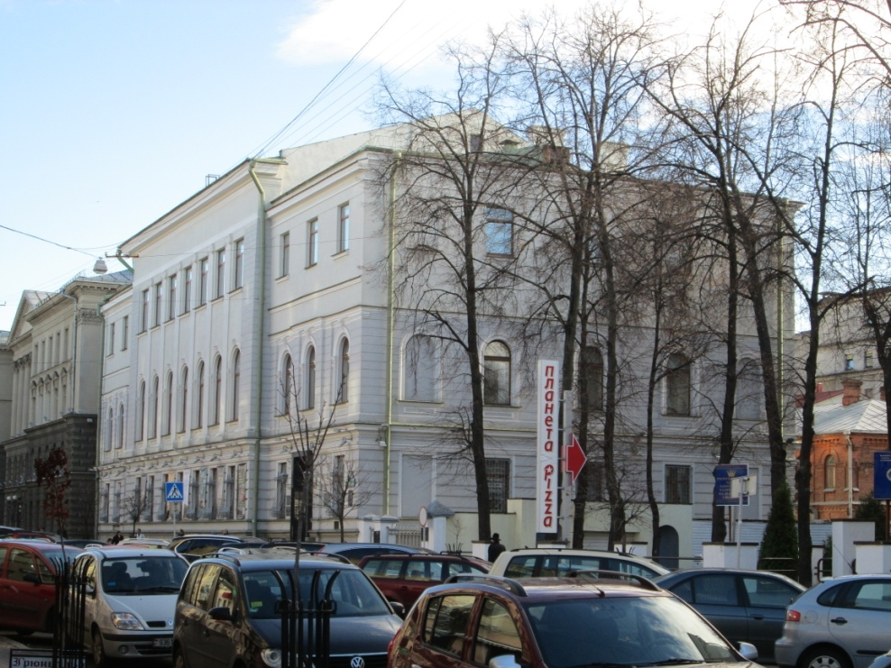
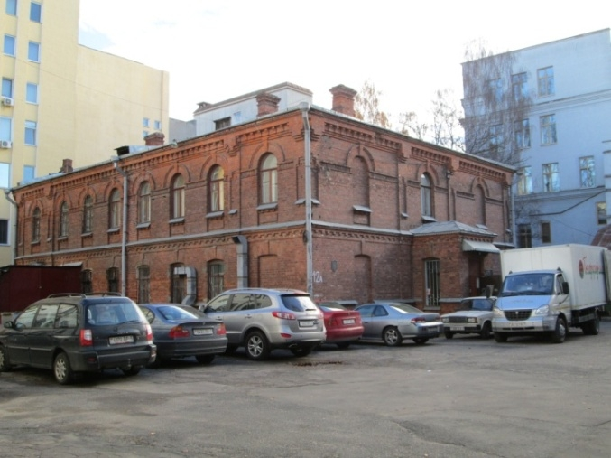
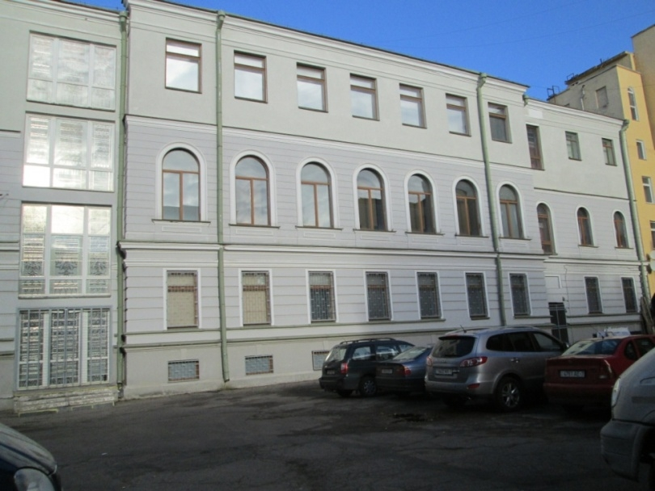

Мінскае адзяленне Дзяржаўнага банка, якое адкрылася ў 1881 годзе, спачатку
размяшчалася ў прыстасаваным памяшканні. На пачатку ХХ стагоддзя для
Дзяржбанка быў адмыслова ўзведзены будынак па вуліцы Падгорнай. Гэта быў
манументальны двухпавярховы будынак з цокальным паверхам. На першым паверсе
размяшчаліся шматлікія канторскія службы, на другім знаходзілася аперацыйная зала,
дапаможныя памяшканні і касавыя каморы – у паўпадвальным паверсе. Аддзяленне
Дзяржбанка Расіі займала прывілеяванае становішча сярод пазыковых устаноў горада,
бо было звязана з дзяржаўным каштарысам. Камерцыйная дзейнасць яго
канцэнтравалася пераважна вакол гандлю лесам. Па колькасці ўлічаных вексельскіх
абавязацельстваў мінскае аддзяленне ў 1899 годзе знаходзілася на пятым месцы ў
Расіі, апярэдзіўшы ўсе іншыя аддзяленні Беларусі і Літвы.
У гэтым жа будынку размяшчалася Мінскае аддзяленне акцыянернага
таварыства «Рускае паўночна-заходняе параходства» (праўленне знаходзілася ў
Лібаве). Аддзяленне афармляла білеты пасажырам, якія ехалі ў Амерыку, Афрыку,
Канаду, Англію.
Пасля Кастрычніцкай рэвалюцыі тут размяшчаўся ЦК КП(б)Б і ЦК ЛКСМБ,
народны камісарыят фінансаў БССР, рэдакцыя часопіса «Беларуская работніца і
сялянка». З 1933 года тут быў выканкам гарсавета, з 1944 года – гаркам і абкам
КП(б)Б, выканкам гарсавета, з 1967 года – Дзяржаўны музей БССР. Будынак
захаваўся ў адноўленым выглядзе. Зараз у гэтым будынаку знаходзіцца Нацыянальны
музей гісторыі і культуры Беларусі (вул. К. Маркса, 14).


